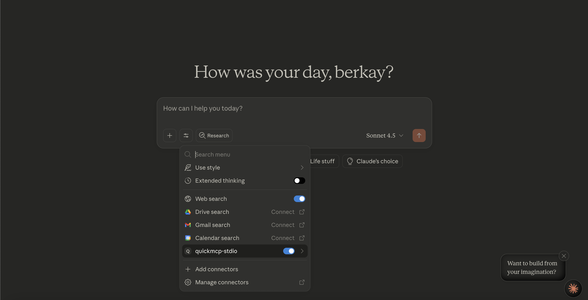

MCP Server Integration Guide
Learn how to integrate your generated MCP servers with Claude Desktop and other platforms


Install and Run
Global install or npx usage
Global installation
npm i -g @softtechai/quickmcpRun
quickmcp
Note: Tools like Claude Desktop may automatically start QuickMCP on launch.
The “Run” step here is mainly to open the web UI so you can configure which data sources
you want to expose via the MCP server. After you save your MCP Server settings once, you
do not need to manually run quickmcp every time
you start Claude Desktop.
Run with npx (no install)
npx -y @softtechai/quickmcpDefault ports
- Web UI:
http://localhost:3000 - MCP SSE/Socket:
http://localhost:3001(Claude integration)
Choose Your Integration Method
Select how you want to use your MCP servers
Integrated Server Method
Access all your MCP servers through a single configuration
✅ Advantages
- Single configuration for all servers
- Automatic updates when you create new servers
- Unified tool naming with server prefixes
- No need to restart Claude Desktop when adding servers
üöÄ Quick Setup for Claude Desktop
Install and run QuickMCP (global)
Install globally and start the app:
npm i -g @softtechai/quickmcpDefault ports:
- Web UI:
http://localhost:3000 - Socket/SSE transport:
http://localhost:3001
Add to Claude Desktop Config
Copy this configuration to your Claude Desktop config file:
üìÅ Config file locations:
- macOS:
~/Library/Application Support/Claude/claude_desktop_config.json - Windows:
%APPDATA%\\Claude\\claude_desktop_config.json - Linux:
~/.config/Claude/claude_desktop_config.json
{
"mcpServers": {
"quickmcp": {
"command": "npx",
"args": ["-y", "@softtechai/quickmcp"]
}
}
}üì∏ Step-by-step configuration:
2a. Open Developer Settings in Claude Desktop:
2b. View/Edit Configuration File:

2c. Add QuickMCP Configuration:

Restart Claude Desktop
Close and reopen Claude Desktop for the changes to take effect.
üõ†Ô∏è Using Your Tools
In Claude Desktop, your tools will be available with this naming pattern:
serverName__toolName
Example: If you have a server called "sales-data" with a tool called "search_customers",
it will appear as sales-data__search_customers
üì∏ See it in action:
1. QuickMCP configured in Claude Desktop:
2. Your tools available in Claude Desktop:

Troubleshooting
Common issues and solutions
❌ Tools not showing up in Claude Desktop
- • Ensure QuickMCP is running (http://localhost:3000 reachable)
- • Verify Claude config; restart Claude Desktop
- • Ensure port 3001 is not blocked (firewall)
üîÑ Server status shows offline
- • Check if port 3001 is already in use
- • Look at console logs for errors